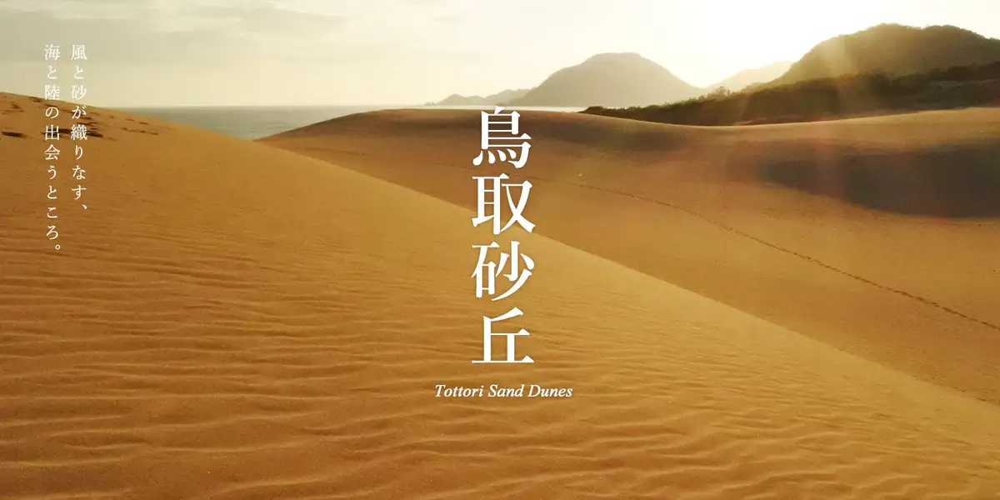
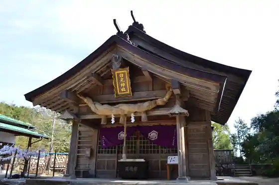
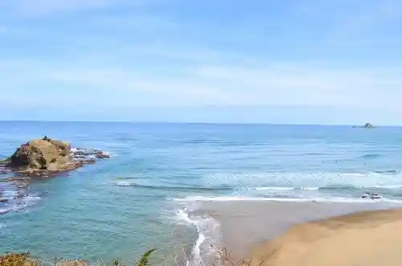
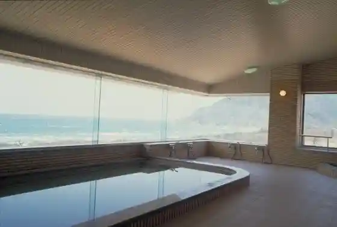
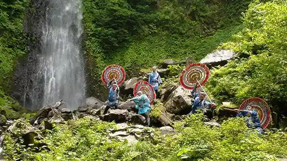

Tottori
Tottori · Tottori
Tottori
Highlighted on the Tottori map.

Sights
Tottori Sakyu
Shirosagi Shrine

Shirosagi Coast

Sakyu Onsen Fureai Hall

Ame Taki

Tottori Onsen
Tottori Minato Kaisen City Ba Karoichi
Tottori Castle Ruins Hisamatsu Park
Tottori Toshogu (Buna Kei Shrine) Buna Kei Park
Hama Village Onsen
Tottori Sakyu Suna no Art Museum
Rakkyo no Hana
Kano Castle Ruins Park
Kano Onsen
Roadside Station Shinwa no Sato Shiro Usagi
Tottori Mingei Art Museum
Tottori Sakyu Kodomo no Kuni
Saji Asutoro Park
Yoshioka Onsen
Kuni Shitei Juyo Bunkazai Jinpu Kaku
U Bai Shrine
Kannon In Garden
Mitaki Kei
Marinpia Ga Tsuyu
Tottori Ga Tsuyu Kanikko Kan
Hama Village Onsen no Ashiyu
Tottori Sakyu Beach
Shirosagi Coast Keta no Mae Tembo Plaza
Warabe Kan
Koyama Ike Aoshima
Tottori Sakyu Sandobodosukuru
Uomi Dai
Inaba Sembonzakura (Sakura no Sono)
Sanno Tani Campground
Bai Numa Shrine
Tottori Sakyu Iryujon
Kanemasa Hamaori Shoten
Rupu Kirin Shishi Basu
(Wattaina) Shoku no Miyako Tottori
Roadside Station Seiryu Chaya Kawahara
Ga Tsuyu Minato Beach
Tottori 100 En Junkan Basu (Kuru Nashi)
Kawara Yutani Onsen Yutani So
Aoya Washi Workshop
Zeroparaguraidasukuru
Naka Village Shoten
Yasuzo Forest Park
Ozawa Ken Beach
Fuse no Shimizu
Fukurogawa Soi Dote Sakura Namiki
Mochigase Nagashi Bina no Kan
Takara Yoshiharu Izumidate
Yoshioka Onsen no Ashiyu
O Shiroyama Lookout Kawara Shiro
Hijiri Shrine
Tofuchikuwa Village Tottori Chimura
Tottori Sakyu Paraguraidasukuru (Sakyu Honpo)
Hama Village Onsen Onsen Jihanki
Onsen Kan Hottopia Kano
Kano Onsen no Ashiyu
Mini Sazo Tsukuri Experience
Soba Uchi Experience
Inaba Manyo Rekishikan
Kano Orai
Aji no Sanpomichi Maeta
Takara Takashi In Garden
Takasago Ya
Tottori Prefectural Museum
Tottori Hanshu Ikeda Ie Hakasho
Mochigase Sports Park
Ta Namazugaike
Aoya Yokoso Kan
Kano Onsen Onsen Jidohambaiki
Midoriya
Kamingusaji
Juho Yama
Koyama Ike Nachuraru Garden (Tottori Hare Yaka Garden)
Watanabe Art Museum
Abe Tottori Do
Gen Tadashi Tera
Kosei Tera
Hioki Sakura Shuzo Museum
Maru Yu Hyakkaten
Yamane Washi Museum
Kano Soba Dojo
Tottori History Museum (Yamabiko Kan)
Tottori Daigaku Kanso Chi Kenkyu Center
Hoshi no Gakushu Experience
Tesuki Ki Washi Zukuri
Tottori Sakyu Joso Experience
Tottori Sakyu Seguei Adobencha Tour
Mochigase no Hina Okuri Dento Gyoji Experience
Tottori Aoya Kyodo Kan
Hioki Sakura
Bijin Cho Warai
Fukuju Umi Inaba Tsuru
Takumi Narikiri Experience
Ga Tsuyu Shrine
Hiyoshi Shrine (Tottori)
Tenjitsu Meicho Inochi Shrine
Sakyu YOGA
Tottori Yubiwa Workshop prodbyNONBODY
Tottori Yakusho